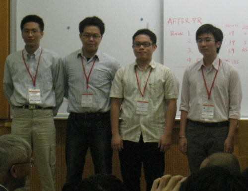
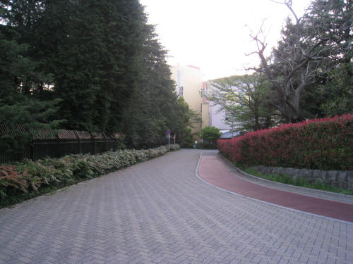

世團賽自戰記
#1 世團賽自戰記 作者：无尽 发表时间：2010-5-23 9:06:35
作者：台湾 林書玄
（因论坛rena动态代码无法正常显示，棋谱在6楼附件中）
這次世界盃團體賽由日本舉辦，採用山口規則，時間２小時，每手加３０秒
每隊開幕時決定一至四台人選，之後不可再變動，但有二位後補可替換，下圖左起一台是我，二台焱少，三台 ko1，四台小u，很巧的，段位剛好是由小至大，但我們並沒有特別的用意。相較於個人賽，我更喜歡團體賽，如同ko1所說，並肩作戰的感覺真好 。

４／２９下午抵達成田機場，一行六個人，除了四個比賽選手外，小狂和焱少的女友ruru也一起同行，幫我們打理其他外務，會場在「國際奧林匹克紀念青少年綜合中心」，環境十分清幽，溫暖的陽光從翠綠的葉子中透過來，加上涼風徐徐，一整個舒服，其他三人都是國際賽老手，直呼我幸運，第一次出國比賽就遇到這麼舒適的地方，日本人果然用心啊 。

晚上開幕典禮更是令人興奮，俗話說百聞不如一見，以前只能從書中或網路上仰望的名人，一個個出現在我面前，中村茂、長谷川一人、河村典彥、山口釉水、磯部泰山、石谷信一、飯尾義弘、岡部寬、賀茂雪、Vladimir Sushkov、Tunnet Taimla、Aivo Oll、Ants Soosїrv、曹冬、李一等人，都是五子棋界赫赫有名的人物 。
主席三森政男前輩，簡單致辭後，開始抽籤並介紹各隊參賽選手，我們抽到６號，前幾輪將會先對上俄羅斯、愛沙尼亞和日本１隊這些強隊，最後一輪對中國，這樣的對戰組合大家都很滿意 。
第一輪：俄羅斯 Vladimir Sushkov
Vladimir Sushkov 曾在世界盃ＡＴ拿過好幾次亞軍，去年終於如願以償登上冠軍寶座，是現任的世界冠軍，坐下後偷瞄了他一眼，看他兩眼直瞪著我，殺氣騰騰，令人不敢直視，但之後幾天和他相處，感覺人還蠻NICE的，不過也笑與不笑時比較起來反差真大。
#2 Re:世團賽自戰記 作者：五八七 发表时间：None
補個李一唱歌^^
http://www.tudou.com/programs/view/6gpYgWfR7Sw/
第一轮黑：587白：Vladimir Sushkov 开局 胜第二轮 黑：Tunnet Taimla 白：587 开局 胜
第三轮 黑：587 胜 白：Paul Valjataga 开局
第四轮 黑：587 白：中村茂 开局 胜
第五轮 黑：587 开局 白：Piddubnyy Kostyantyn 胜
第六轮 黑：587 胜 白：贺茂雪 开局
第七轮 黑：李一 胜 白：587 开局
第八轮 黑：587 开局 和 白：中村茂
第九轮 黑：Tunnet Taimla 开局 胜 白：587
#3 Re:世團賽自戰記 作者：淡红的秋樱 发表时间：2010-5-23 9:48:48
谢谢楼主
［此帖子已被 淡红的秋樱 在 2010-5-23 9:50:22 编辑过］
#4 Re:世團賽自戰記 作者：无尽 发表时间：2010-5-23 9:50:18
作者也来了 威望应该给他 XD
［此帖子已被 无尽 在 2010-5-23 9:55:14 编辑过］
#5 Re:世團賽自戰記 作者：五八七 发表时间：2010-5-23 9:56:17
test［此帖子已被 五八七 在 2010-5-23 10:05:23 编辑过］
#6 Re:世團賽自戰記 作者：无尽 发表时间：2010-5-23 9:57:45
我之前试过 不知道怎么显示不了。。。
附上作者原来的rar文档 动态棋谱里面可以看到
 世團賽自戰記.part2.rar
世團賽自戰記.part2.rar
［此帖子已被 无尽 在 2010-5-23 10:20:47 编辑过］
［ 失落刀 于 2010-5-23 10:44:18 时花20金币送鲜花一朵］
#7 Re:世團賽自戰記 作者：励精 发表时间：2010-5-23 10:06:30
幾天來觀察李一下棋時，發現個有趣的地方，你若要判斷他目前的局面好壞，從枱面上的表情並不容易察覺，但枱面下卻可看出一些端倪，曾在一本書上看過，一個人身體最誠實的地方在他的腳，若有機會看他下棋的人不妨留意一下。
#8 Re:世團賽自戰記 作者：屏蔽 发表时间：2010-5-23 10:09:07
大家好，我的脚表示出现在文章中后感到很激动，我特地代表我的脚来感谢大家的支持和鼓励。#9 Re:世團賽自戰記 作者：失落刀 发表时间：2010-5-23 10:43:30
欢迎：五八七#10 Re:世團賽自戰記 作者：松痕 发表时间：2010-5-23 12:38:46
这对李一的观察力还真是毒特。#11 Re:世團賽自戰記 作者：木其山人 发表时间：2010-5-23 12:57:34
谁能给俺点威望啊［ 无尽 于 2010-5-23 13:23:53 时奖励此帖[金币加 20 威望加1］0+1
没有威望的可以去专贴申请的~
［此帖子已被 无尽 在 2010-5-23 13:24:29 编辑过］
#12 Re:世團賽自戰記 作者：极地剑客 发表时间：2010-5-23 13:54:14
图片挂了?///#13 Re:世團賽自戰記 作者：有志青年 发表时间：2010-5-23 17:51:19
图片及棋谱已经修补#14 Re:世團賽自戰記 作者：五八七 发表时间：2010-5-23 20:45:55
謝謝大家的鮮花，愛五子棋網真是個不可多得的好站，又有眾多高手為人解答疑問，我有空就會來這晃晃，大部份的五子棋新知也都得自於此，在此感謝有志兄為大家提供這個交流的地方
#15 Re:世團賽自戰記 作者：裁决殿雪月 发表时间：2010-5-23 21:45:15
还是觉得繁体字漂亮——！#16 Re:世團賽自戰記 作者：第五象限 发表时间：2010-5-23 22:48:28
台湾的常用五子棋论坛是什么呢？#17 Re:世團賽自戰記 作者：无尽 发表时间：2010-5-23 22:55:34
批踢踢吧，不过大陆要用代理，而且不是每次都能上，上不了我就下次再看了，更新也不是太多：）#18 Re:世團賽自戰記 作者：裁决殿雪月 发表时间：2010-5-24 0:52:55
代理也就是传说中的翻墙软件！！！